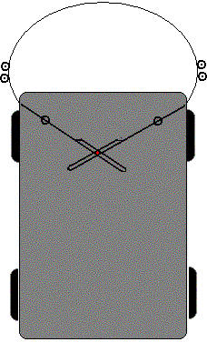

This issue is all about finding the distance from one point to another. Several methods are discussed:
Mechanical ranging is old news, but it is seldom done really well. Here are a couple "better" ideas.

Bumpers don't give enough warning because they are generally simple on/off things that don't stick out very far. One of the most brilliant things I've ever seen was the design of a "sane" car that had a huge spring "bumper" that looped out in front of the car and extended a little out to each side. The attachment points on either side were hinged and then extended so that they crossed under the car. At that point, they intersected a "joystick" which ran up to the driver through a ball joint. I've drawn up a little picture and the red dot is the joystick. The left and right edges of the spring have rollers which are designed to follow a special curb at either side of each lane. When they are "squeezed" the result is that the stick is pushed forward, increasing the speed of the car. Contact with the front of the spring pulls the stick back, slowing the vehicle. Any misalignment of left to right pressure causes the car to steer to a corrective course and thereby follow the "curbs." Dead simple, hopefully reliable, and... proportional. It was designed by a little girl for her science fare entry and I've never been able to forget it. I wish I knew where she ended up.
For smaller applications, the connection points can be pots or other rotary encoders. The difference between the readings indicates front/back contact. The addition of the readings is proportional to the amount of left/right contact.
Huh? The idea here is to throw some small object and see if it bounces back. Won't that mess up the area? Not if you throw particles of the environment around you. "Throw" air. Look for the returning breeze. Or water, sand, etc... This is the same method that gives you that weird sense of solid objects close by when you are not able to see and the hair on your face or arms pick up the little currents of air that are bounding off the wall you will walk into just before you have time to stop. This is heightened the more skin exposed and can be quite accurate when leaving a pitch dark house out the back door without ones clothes. Don't ask.
It was first suggested to me by one of the few ladies on the PICList but the only implementation of this I have ever seen was an entry in a robot "firefighter" competition by an obviously brilliant engineer. He (sorry girls, it was a he) started off with the fact that the candle needed to be blown out. Rather than depend on accurate positioning, he realized that he could just "spit" air in all directions at the given height of the candle. So he mounted a whisper fan vertically and found an inverted cone-like baffle that would direct the air to all sides. After setting that up, he realized that the air from the top was being circulated back to the bottom faster when the bot was up near a wall. His bumpers became nothing more than flags and never contacted anything under normal operation. When he ran the 'bot we realized that another advantage of the proportional sensing of wall proximity allowed him to go much faster and round the corners without slowing down because he had some room between first sensing the wall and actually hitting it. The 'bot had no brains to speak of, it just turned away from any flag that dropped down. Sadly, the rules of the competition didn't allow the 'bot to just blow out the candle and keep going; the judges ruled that it had to actually sense the flame and this 'bot never had that ability! He did put out the candle faster than anyone else, just about every run.
See also: